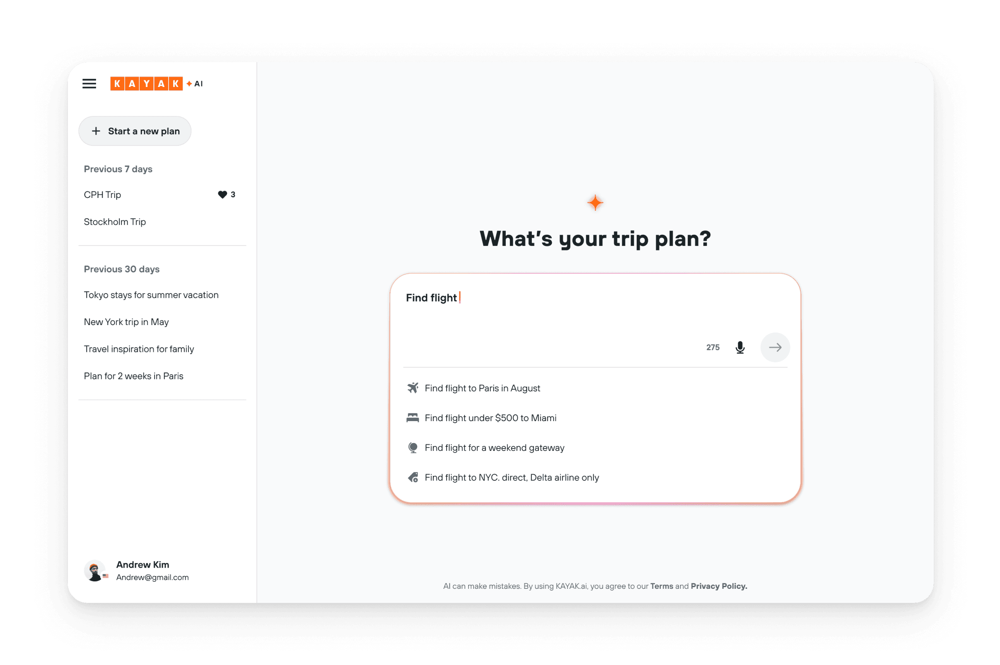
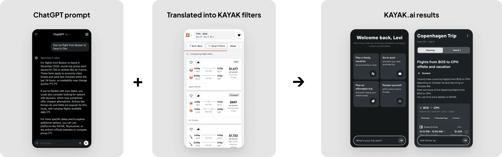
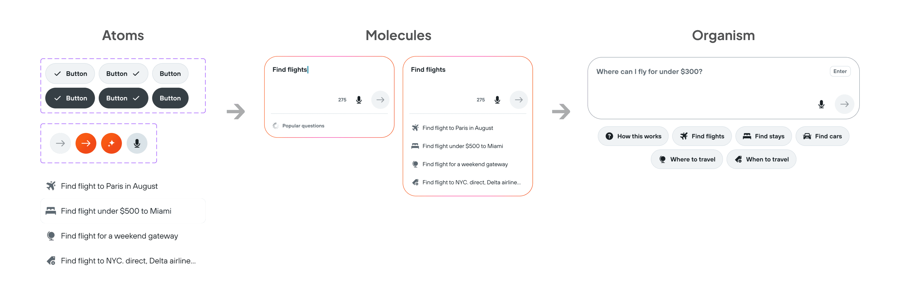
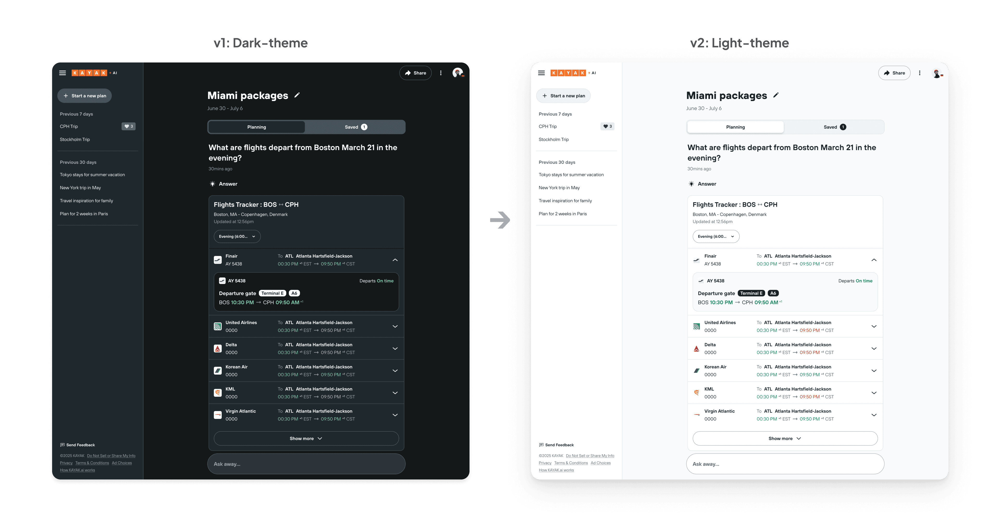

KAYAK · 2024–Present · Standalone AI assistant
KAYAK.ai
KAYAK.ai is the company's AI travel assistant. I defined its information architecture and interaction model, the foundation that connects natural-language prompts to KAYAK's structured metasearch results, and built it to scale.
- Role
- Senior Product Designer, AI (IA & interaction model)
- Team
- Four-person founding team; product, engineering, brand
- Timeline
- 2024–present
- Scope
- Information architecture, interaction model, AI design system

Why it mattered
The brief
Turn natural language into real travel actions
The project began in June 2024 with a four-person team exploring how freeform queries could become actionable searches. I defined the IA and interaction model, designing how GPT-generated responses and KAYAK's structured data combine into one adaptable results layout. The goal was a single workspace covering where to travel, when to travel, and what to book.

The approach
Design for reuse before visual detail
Rather than polishing one screen, I designed for reusability and scalability. After the first launch we needed to broaden the product quickly, so I built a compact AI design set on top of KAYAK's existing design system: an atomic UI structure that could be assembled and expanded as requirements shifted.

System-driven design
Built to absorb change
Because components were structured for flexible adaptation, the system absorbed change cheaply. When the branding team introduced a new visual strategy, applying a full light theme was a configuration change, not a rebuild. The same structure let the live-data widgets, each with a clear header and body, expand into ten variations in a short window.

How I worked
-
Defined the model, not just screens
Set the IA and interaction model connecting LLM prompts to structured metasearch from the earliest stage.
-
Built on the system, not net-new
A compact AI design set on KAYAK's existing design system, so a small team could scale fast and a later dark-to-light rebrand applied as configuration, not a rebuild.
-
Structured widgets to expand
One header-and-body model let live-data widgets grow to ten variations quickly.
-
Kept the flow all-in-one
A right-side detail view reused KAYAK's product pages so users compared without leaving the AI workflow.
-
What I didn't build
No bespoke layout per widget; that single structure is what let the product scale on a four-person team.
Collaboration & ownership
Setting the foundation others build on
- Product
- Engineering
- Brand
As the design lead on a four-person founding team, I owned the IA and interaction model that connects LLM prompts to KAYAK's structured metasearch, the layer the rest of the AI product is built on. That foundation is now being carried into KAYAK's core surfaces by a dedicated embedding team.
Explore, Jun 2024
Joined a four-person team to turn freeform queries into actionable searches.
Define
Set the IA and interaction model bridging GPT responses and KAYAK's structured data.
Systematize
Built an atomic AI design set; absorbed a dark-to-light rebrand and expanded to ten widget variations.
Hand off
Patterns now feed a dedicated team embedding AI across KAYAK's core product.
What's next
From standalone to embedded
A year after launch, a new team formed to bring these AI capabilities into KAYAK's core product. My role now focuses on refining the early patterns into reusable components for any KAYAK surface, work that continued in KAYAK AI Chat.